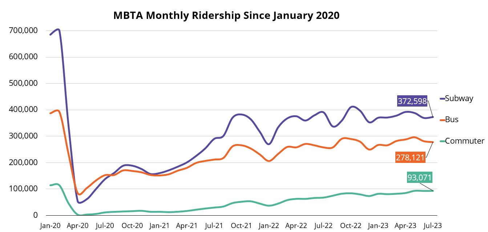

The main objective of this study is to investigate the academic, personal, socio-cultural and economic factors that cause or increase stress among university students, in Sri Lanka. An explorative and qualitative methodology was adopted for the study. Undergraduates of the Faculty of Medicine, Arts, Education, and Management of the University of Colombo are selected as the sample. Twenty semi-structured interviews and four focus group discussions were used as data collection tools based on purposive sampling. The data were analyzed qualitatively based on themes and narration of respondents. Internal academic workload and different personal relationships as well as external socioeconomic and political dynamics always create and increase the preconditions for stress among undergraduates. There some leading factors that directly and subjectively cause and increase the stress among undergraduates of the University of Colombo. They are (1) Academic workload, (2) Economic hardships, (3) Personal relationships, (4) Ragging or collective students' behavior, (5) Hostel life, (6) Cultural shock or pressure. However, these causes are more or less dependent on the financial status of the student's family, faculty and course of study, gender imbalance, knowledge of English and Information and Technology. The study was conducted only one university of Sri Lanka due time and access constrains. The study will be useful to understand the issues and challenges faced by university undergraduates and how they lead to stress condition among students. The finding will provide comprehensive knowledge on the personal grievances of students and differences among the students in terms of facilities and opportunities they enjoy in the university life. This study will also generate new knowledge and open platform for critical discussion on students' stress. The research will be helpful academics and administrators to restructure academic programs to minimize the academic work-related. Universities will promote students' friendly curriculums by introducing more and more language and technology-based infrastructure. This study will also help to identify the personal and political issues ragging and gender-based violence and they will be solved by university administration.
What makes one city more apt to use public transportation relative to another? This is an important issue that has been studied by others in various ways. Glaeser et al. (2008), find that the availability of public transportation is a major explanatory factor in urban poverty. Glaeser and Shapiro find evidence that car cities, where a large percentage of people drive themselves to work, grew at the expense of public transportation cities as the percentage of cities population taking public transportation declined between 1980 and 2000. Murray et al. (1998), conclude that the performance of a public transport system is determined largely by the proximity of public transport stops to the regional population.
transport stops to the regional population. Initially, the data were gathered for the top 136 metropolitan statistical areas in the U.S. using the raw number of unlinked trips on public transportation as the measure of ridership. Due to the wide variation in population and ridership across cities, the per-capita unlinked trips were calculated for use as the dependent variable. Missing values reduced the number of observations to 105.
The regression analysis utilizes the process of backwards selection by eliminating a single variable per regression based on the highest P-value that is attained. This process will continue until each coefficients p-value is less than .10. First, however, Parks test for heteroscedasticity is performed. After the backwards selection, an F-test is performed to confirm the appropriateness of the resulting equation.